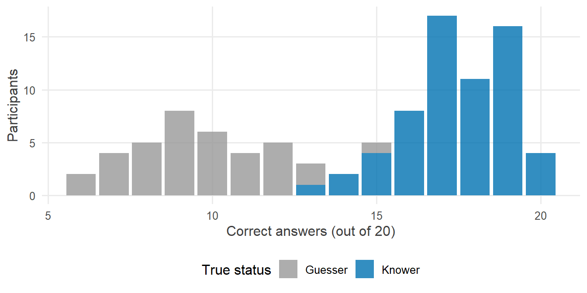
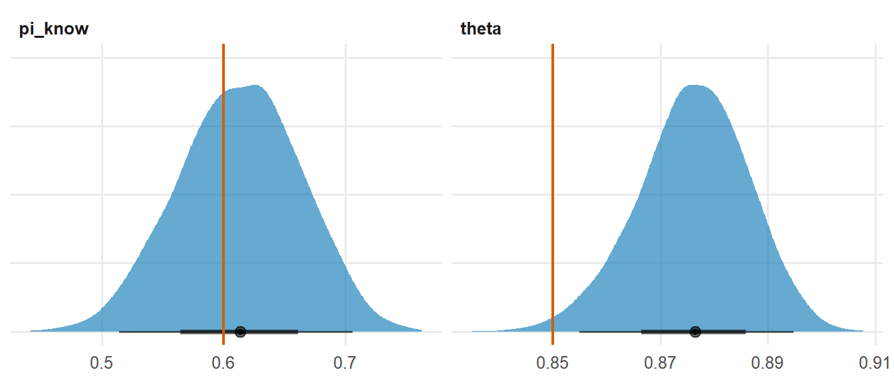
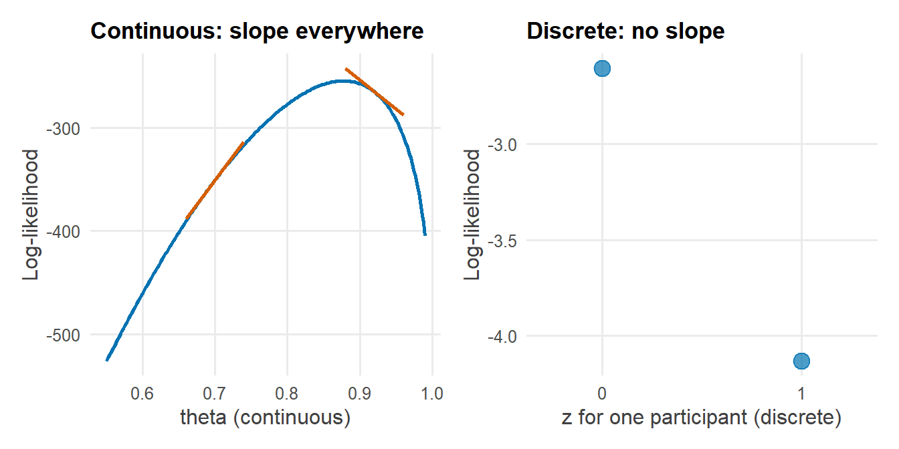

library(tidyverse)
library(cmdstanr)
library(posterior)
library(tidybayes)
source("R/theme.R")
source("R/utils.R")第 14 章 Stan 为什么不能有离散参数
Stan 的 parameters 块为什么不能声明整数？HMC 为什么需要梯度？遇到离散潜变量时有哪些出路？
第 13 章的潜变量是连续的：阅读能力可以取任何实数。但很多研究问题中的潜变量是离散的：一名被试是真的掌握了知识，还是在随机猜测？一个样点是真的有某种鸟，还是只是没被观察到？一位患者属于哪个亚型？
如果照搬第 13 章的思路，把离散潜变量声明为参数，Stan 会直接拒绝编译。本章解释为什么，并给出出路：把离散变量求和掉。
1 本章要回答的问题
- 为什么 Stan 的
parameters块里不能声明整数？ - HMC 为什么需要梯度？
- 遇到离散潜变量时，有哪些出路？
2 公式卡片
知道者与猜测者
\[ \begin{aligned} z_i &\sim \operatorname{Bernoulli}(\pi) & &\text{1 = 掌握，0 = 猜测} \\ k_i \mid z_i = 1 &\sim \operatorname{Binomial}(M,\ \theta) & &\text{掌握者以概率 } \theta \text{ 答对} \\ k_i \mid z_i = 0 &\sim \operatorname{Binomial}(M,\ 0.5) & &\text{猜测者以概率 0.5 答对（二选一）} \end{aligned} \]
边缘化：把 \(z_i\) 求和掉
\[ p(k_i \mid \pi, \theta) = \sum_{z \in \{0, 1\}} p(z_i = z \mid \pi)\, p(k_i \mid z_i = z, \theta) = \pi\, \operatorname{Binomial}(k_i \mid M, \theta) + (1 - \pi)\, \operatorname{Binomial}(k_i \mid M, 0.5) \]
第一张卡片是我们“想写”的模型，第二张是 Stan“能运行”的模型。两者描述的是同一个关于 \((\pi, \theta)\) 的后验。
3 模拟数据
研究情境：100 名被试完成一份 20 道二选一题目的测验。一部分被试掌握了相关知识，另一部分只是在猜。
set.seed(2026)
N <- 100
M <- 20
pi_true <- 0.6 # proportion of knowers
theta_true <- 0.85 # accuracy of knowers
z_true <- rbinom(N, 1, pi_true)
k <- rbinom(N, M, ifelse(z_true == 1, theta_true, 0.5))
sim_data <- tibble(id = 1:N, z_true, k)ggplot(sim_data, aes(x = k, fill = factor(z_true, labels = c("Guesser", "Knower")))) +
geom_bar(alpha = 0.8) +
scale_fill_manual(values = c(Guesser = f2s_colors[["prior"]], Knower = f2s_colors[["post"]])) +
labs(x = "Correct answers (out of 20)", y = "Participants", fill = "True status")
两组的得分分布有重叠：一个答对 13 题的被试，可能是运气好的猜测者，也可能是状态不佳的掌握者。
4 Stan 代码
4.1 直接翻译：编译失败
把第一张公式卡片直接翻译成 Stan：
// Chapter 14: This program does NOT compile -- on purpose.
// It tries to declare the discrete latent variable z as a parameter.
data {
int<lower=1> N; // number of participants
int<lower=1> M; // number of questions per participant
array[N] int<lower=0, upper=M> k; // number of correct answers
}
parameters {
real<lower=0, upper=1> pi_know; // proportion of knowers
real<lower=0.5, upper=1> theta; // accuracy of knowers
array[N] int<lower=0, upper=1> z; // 1 = knower, 0 = guesser <-- not allowed
}
model {
target += bernoulli_lpmf(z | pi_know);
for (i in 1:N) {
target += binomial_lpmf(k[i] | M, z[i] == 1 ? theta : 0.5);
}
}# Call stanc, the Stan-to-C++ compiler that ships with CmdStan, directly
stanc_exe <- file.path(cmdstan_path(), "bin",
if (.Platform$OS.type == "windows") "stanc.exe" else "stanc")
stanc_result <- processx::run(stanc_exe, "stan/ch14_discrete_error.stan",
error_on_status = FALSE)
cat(stanc_result$stderr)#> Semantic error in 'stan/ch14_discrete_error.stan', line 13, column 2 to column 35:
#> -------------------------------------------------
#> 11: real<lower=0, upper=1> pi_know; // proportion of knowers
#> 12: real<lower=0.5, upper=1> theta; // accuracy of knowers
#> 13: array[N] int<lower=0, upper=1> z; // 1 = knower, 0 = guesser <-- not allowed
#> ^
#> 14: }
#> 15:
#> -------------------------------------------------
#>
#> Parameters cannot be integers.Stan 的回答很干脆：Parameters cannot be integers.
4.2 边缘化：把 \(z\) 求和掉
// Chapter 14: Knowers and guessers, with the discrete z marginalized out
//
// z_i ~ Bernoulli(pi) 1 = knows the material, 0 = guesses
// k_i ~ Binomial(M, theta) if z_i = 1
// k_i ~ Binomial(M, 0.5) if z_i = 0
//
// Marginal: p(k_i) = pi * Binomial(k_i | M, theta) + (1 - pi) * Binomial(k_i | M, 0.5)
data {
int<lower=1> N; // number of participants
int<lower=1> M; // number of questions per participant
array[N] int<lower=0, upper=M> k; // number of correct answers
}
parameters {
real<lower=0, upper=1> pi_know; // proportion of knowers
real<lower=0.5, upper=1> theta; // accuracy of knowers (better than guessing)
}
model {
// Priors
target += beta_lpdf(pi_know | 1, 1);
target += beta_lpdf(theta | 2, 2);
// Likelihood: sum over the two possible values of z_i,
// written directly on the probability scale (see Chapter 15 for a safer way)
for (i in 1:N) {
target += log(pi_know * exp(binomial_lpmf(k[i] | M, theta))
+ (1 - pi_know) * exp(binomial_lpmf(k[i] | M, 0.5)));
}
}\(z_i\) 从 parameters 块中消失了。model 块中的那一行，就是第二张公式卡片：对每名被试，把“他是掌握者”和“他是猜测者”两种可能性的概率加权求和，再取对数加到 target 上。
5 R 端运行
mod_naive <- cmdstan_model("stan/ch14_guess_naive.stan")
fit_naive <- mod_naive$sample(
data = list(N = N, M = M, k = k),
seed = 2026, chains = 4, parallel_chains = 4, refresh = 0
)#> Running MCMC with 4 parallel chains...
#>
#> Chain 1 finished in 0.4 seconds.
#> Chain 2 finished in 0.4 seconds.
#> Chain 3 finished in 0.4 seconds.
#> Chain 4 finished in 0.4 seconds.
#>
#> All 4 chains finished successfully.
#> Mean chain execution time: 0.4 seconds.
#> Total execution time: 0.6 seconds.fit_naive$diagnostic_summary()#> $num_divergent
#> [1] 0 0 0 0
#>
#> $num_max_treedepth
#> [1] 0 0 0 0
#>
#> $ebfmi
#> [1] 1.207194 1.244600 1.183197 1.2416666 后验整理与可视化
fit_naive$summary(c("pi_know", "theta"))#> # A tibble: 2 × 10
#> variable mean median sd mad q5 q95 rhat ess_bulk ess_tail
#> <chr> <dbl> <dbl> <dbl> <dbl> <dbl> <dbl> <dbl> <dbl> <dbl>
#> 1 pi_know 0.613 0.614 0.0497 0.0517 0.530 0.694 1.00 2901. 2578.
#> 2 theta 0.876 0.876 0.0102 0.0101 0.858 0.892 1.00 2506. 2144.fit_naive |>
gather_draws(pi_know, theta) |>
ggplot(aes(x = .value)) +
stat_halfeye(fill = f2s_colors[["post"]], alpha = 0.6, normalize = "panels") +
geom_vline(
data = tibble(.variable = c("pi_know", "theta"), true = c(pi_true, theta_true)),
aes(xintercept = true), colour = f2s_colors[["truth"]], linewidth = 0.8
) +
facet_wrap(~ .variable, scales = "free") +
labs(x = NULL, y = NULL) +
theme(axis.text.y = element_blank())
即使从未知道任何一名被试的真实身份，模型也找回了掌握者的比例与正确率。至于“每名被试是哪一类”，并没有丢失，第 15 章会在 generated quantities 中把它找回来。
7 为什么这样写
7.1 HMC 为什么需要梯度？
第 2 章和第 11 章都提到，HMC 每次迭代都沿着一条模拟的物理轨迹走若干个跳步。可以把它想象成一个在“地形”上滑行的小球：地形的高低由负的对数后验密度决定，小球在低洼处（高密度区）停留得更多。
要模拟小球的运动，每一步都要知道这里的坡度是多少、往哪个方向倾斜，也就是对数密度对每个参数的梯度。Stan 用自动微分从 model 块的代码中自动算出这个梯度。
梯度只对连续变量有定义。看下面两张图：
loglik_theta <- tibble(theta = seq(0.55, 0.99, length.out = 200)) |>
mutate(loglik = map_dbl(theta, \(t) {
sum(log(pi_true * dbinom(k, M, t) + (1 - pi_true) * dbinom(k, M, 0.5)))
}))
tangent_at <- c(0.7, 0.92)
tangents <- map(tangent_at, \(t0) {
h <- 1e-4
f <- \(t) sum(log(pi_true * dbinom(k, M, t) + (1 - pi_true) * dbinom(k, M, 0.5)))
f0 <- f(t0)
slope <- (f(t0 + h) - f(t0 - h)) / (2 * h)
tibble(theta = t0 + c(-0.04, 0.04), loglik = f0 + slope * c(-0.04, 0.04), t0 = t0)
}) |>
list_rbind()
p_left <- ggplot(loglik_theta, aes(x = theta, y = loglik)) +
geom_line(colour = f2s_colors[["post"]], linewidth = 1) +
geom_line(data = tangents, aes(group = t0), colour = f2s_colors[["truth"]], linewidth = 1) +
labs(x = "theta (continuous)", y = "Log-likelihood", title = "Continuous: slope everywhere")
one_person <- sim_data |> filter(k == 13) |> slice(1)
loglik_z <- tibble(
z = c(0, 1),
loglik = c(dbinom(one_person$k, M, 0.5, log = TRUE), dbinom(one_person$k, M, theta_true, log = TRUE))
)
p_right <- ggplot(loglik_z, aes(x = z, y = loglik)) +
geom_point(colour = f2s_colors[["post"]], size = 4) +
scale_x_continuous(breaks = c(0, 1), limits = c(-0.3, 1.3)) +
labs(x = "z for one participant (discrete)", y = "Log-likelihood",
title = "Discrete: no slope")
patchwork::wrap_plots(p_left, p_right)
对 \(\theta\) 而言，采样器在任何位置都知道往哪边走能提高密度。对 \(z\) 而言，“\(z = 0.37\)”没有意义，从 0 到 1 之间也没有可以滑行的坡。HMC 的整个机制建立在连续的轨迹上，离散变量无处安放。
7.2 边缘化为什么不损失信息？
边缘化利用的是概率论中最基本的求和法则：
\[ p(k_i \mid \pi, \theta) = \sum_{z} p(k_i, z_i = z \mid \pi, \theta) \]
把 \(z_i\) 的所有可能取值加起来，得到的是 \(k_i\) 的边际似然。\((\pi, \theta)\) 的后验只依赖这个边际似然，所以边缘化前后，\((\pi, \theta)\) 的后验完全相同。
\(z_i\) 的信息也没有丢失：给定 \((\pi, \theta)\)，可以用贝叶斯公式算出每名被试是掌握者的概率：
\[ p(z_i = 1 \mid k_i, \pi, \theta) = \frac{\pi\, \operatorname{Binomial}(k_i \mid M, \theta)}{\pi\, \operatorname{Binomial}(k_i \mid M, \theta) + (1-\pi)\, \operatorname{Binomial}(k_i \mid M, 0.5)} \]
这一步放在 generated quantities 中完成，见第 15 章。
而且，边缘化往往比直接对离散变量抽样更有效率：直接抽样时，每次只能得到 \(z_i\) 是 0 还是 1；边缘化之后，我们对每次抽样都得到一个连续的概率，它包含的信息更多，估计的方差更小。
7.3 遇到离散潜变量，有哪些出路？
| 出路 | 适用情形 | 例子 |
|---|---|---|
| 边缘化（最常用） | 离散变量的取值有限，求和可以写出 | 混合模型、潜类别分析、占域—检测模型、变点模型 |
| 换成连续的参数化 | 离散结构可以用连续量近似或替代 | 用连续的混合比例代替硬分类 |
| 使用支持离散参数的其他工具 | 离散空间很大、无法求和 | 基于 Gibbs 抽样的软件 |
在 Stan 中，第一种出路覆盖了绝大多数实际问题。Stan 模型库中的潜类别分析、潜剖面分析、占域—检测模型，用的都是本章的思路。
7.4 为什么本章的写法“能用但不够好”？
本章的 model 块先用 exp() 把对数概率变回概率，相加之后再用 log() 变回对数。数学上没有问题，在这份数据上也运行良好。
但第 4 章说过，Stan 坚持在对数尺度上计算，正是为了避免概率太小时下溢为 0。exp(binomial_lpmf(...)) 把这个保护拆掉了：只要两个分量的对数概率都很小（比如小于 \(-745\)），exp() 就会得到 0，log(0) 就是 \(-\infty\)。下一章会看到这种情况在实际中如何发生，以及 log_sum_exp 如何解决它。
8 常见错误
| 错误写法 | 后果 | 正确写法 |
|---|---|---|
在 parameters 中声明 int |
编译错误：Parameters cannot be integers. |
边缘化 |
把离散变量声明为 real<lower=0, upper=1> 来“绕过”限制 |
能运行，但它成了一个连续变量，模型的含义完全改变了 | 边缘化 |
| 边缘化时漏掉某个取值 | 概率之和不为 1，后验错误 | 确保求和覆盖离散变量的所有取值 |
| 边缘化时忘记乘以先验概率 \(\pi\)、\(1-\pi\) | 等于假设两类的比例相等，且不随数据更新 | 每一项都是“先验概率 × 条件似然” |
| 在概率尺度上求和 | 可能下溢，导致 \(-\infty\) | 使用 log_sum_exp（第 15 章） |
9 练习
练习 1 手算一名被试的边际似然
取一名答对 13 题的被试，在 \(\pi = 0.6\)、\(\theta = 0.85\) 时，用 R 计算他的边际似然，以及他是掌握者的概率。
提示参考答案
k_i <- 13
p_if_knower <- 0.6 * dbinom(k_i, M, 0.85)
p_if_guesser <- 0.4 * dbinom(k_i, M, 0.5)
c(
marginal_likelihood = p_if_knower + p_if_guesser,
prob_knower = p_if_knower / (p_if_knower + p_if_guesser)
)#> marginal_likelihood prob_knower
#> 0.03917991 0.24523727答对 13 题的被试，是掌握者的概率约为四分之一：他更可能是猜测者，但远不能确定。这正是第 15 章要在后验中处理的“分类不确定性”。
练习 2 为什么 \(\theta\) 的下界是 0.5？
theta 被声明为 real<lower=0.5, upper=1>。如果改成 real<lower=0, upper=1>，会发生什么？
提示参考答案
下界 0.5 表达了“掌握者的正确率高于猜测者”的定义。去掉它之后，模型出现了一种新的不识别：\(\theta < 0.5\) 时，“掌握者”反而答得比猜测者差。虽然在本例中猜测者的正确率固定为 0.5，两类并不完全对称，但当数据中两类区分不明显时，后验可能在 \(\theta\) 小于和大于 0.5 的区域都有质量，解释变得混乱。
这与第 13 章的符号识别问题本质相同：用约束把模型的含义写清楚。如果猜测者的正确率也是未知参数，两类就会完全对称，必须用类似 ordered 的约束来区分它们（第 15 章）。
练习 3 三类被试
假设还有第三类被试“部分掌握者”，正确率为 \(\theta_2\)，且 \(0.5 < \theta_2 < \theta_1\)。写出边缘化后的似然。
提示参考答案
\[ p(k_i) = \pi_1 \operatorname{Binomial}(k_i \mid M, \theta_1) + \pi_2 \operatorname{Binomial}(k_i \mid M, \theta_2) + \pi_3 \operatorname{Binomial}(k_i \mid M, 0.5) \]
其中 \((\pi_1, \pi_2, \pi_3)\) 是三类的比例，和为 1，在 Stan 中声明为 simplex[3] pi;（第 3 章）。\(\theta_1 > \theta_2 > 0.5\) 的顺序可以用 positive_ordered 或在变换参数中构造。求和从两项变成三项，结构完全不变。
练习 4 “连续化”离散变量可以吗？
有人提议：把 \(z_i\) 声明为 real<lower=0, upper=1>，再写 k[i] ~ binomial(M, z[i] * theta + (1 - z[i]) * 0.5)。这样不就绕过了离散参数的限制吗？这个模型和本章的模型一样吗？
提示参考答案
不一样。这个模型假设每名被试的正确率可以是 \(0.5\) 到 \(\theta\) 之间的任意值，而不是“要么 0.5、要么 \(\theta\)”。它描述的是“每个人有自己的掌握程度”，而不是“每个人属于两类之一”。
这样的模型并非不能用，它只是一个不同的模型，回答的是不同的研究问题。如果研究假设确实是“两类被试”，就应当用边缘化来忠实地表达它。
10 小结
- HMC 依靠对数密度的梯度来决定轨迹，梯度只对连续参数有定义，所以 Stan 不允许离散参数。
- 出路是边缘化：对离散变量的所有取值求和，得到连续参数的边际似然。
- 边缘化不损失信息：连续参数的后验不变，离散变量的后验概率可以在
generated quantities中用贝叶斯公式找回。 - 本章在概率尺度上求和，能用但有下溢风险；下一章用
log_sum_exp在对数尺度上完成同样的计算。
11 延伸
- 下一章：第 15 章
log_sum_exp：边缘化离散变量。 - 潜类别、潜剖面与占域—检测模型都是本章思路的应用，Stan 模型库中有完整案例。
12 参考资料
- Stan User’s Guide 的 Latent Discrete Parameters 一章系统讲解了如何边缘化离散参数，包括变点模型、标记重捕模型等例子 (Stan Development Team, 2026)。
- HMC 为什么依赖梯度，见 Betancourt (2017) 与 Neal (2011)。
- Statistical Rethinking 第 15 章讨论了离散缺失值的边缘化 (McElreath, 2020)。
Betancourt, M. (2017). A Conceptual Introduction to Hamiltonian Monte Carlo. https://arxiv.org/abs/1701.02434
McElreath, R. (2020). Statistical Rethinking: A Bayesian Course with Examples in R and Stan (2 版). CRC Press.
Neal, R. M. (2011). MCMC Using Hamiltonian Dynamics. 收入 S. Brooks, A. Gelman, G. L. Jones, & X.-L. Meng (编), Handbook of Markov Chain Monte Carlo (页 113～162). CRC Press.
Stan Development Team. (2026). Stan User’s Guide (Version 2.40). https://mc-stan.org/docs/stan-users-guide/